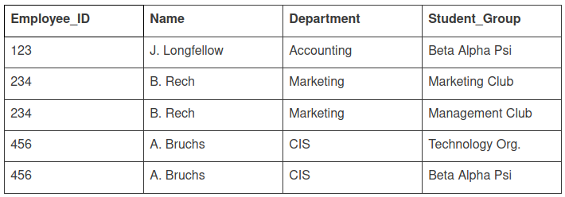

Normalization
It's a technique(is the process of splitting relations into well structured relations) to remove or reduce the redundancy from the table.

An update anomaly is a data inconsistency that results from data redundancy and a partial update.
For example, each employee in a company has a department associated with them as well as the student group they participate in. If A. Bruchs’ department is an error it must be updated at least 2 times or there will be inconsistent data in database. If the user performing the update doesn't realize the data is stored redundantly the update will not be done properly.
A deletion anomaly is the unintended loss of data due to deletion of other data.
For example, if the student group Beta Alpha Psi disbanded and was deleted from the table above, J. Longfellow and the Accounting department would cease to exist. The results in database inconsistencies and is an example of how combining information that does not really belong together into one table can cause problems.
An insertion anomaly is the inability to add data to the database due to absence of other data.
For example, assume Student_Group is defined so that null values are not allowed. If a new employee is hired but not immediately assigned to a Student_Group then this employee could not be entered into the database. The result in database inconsistencies due to omission.
Update , deletion and insertion anomalies are very undesirable in any database.Anomalies are avoided by normalization.